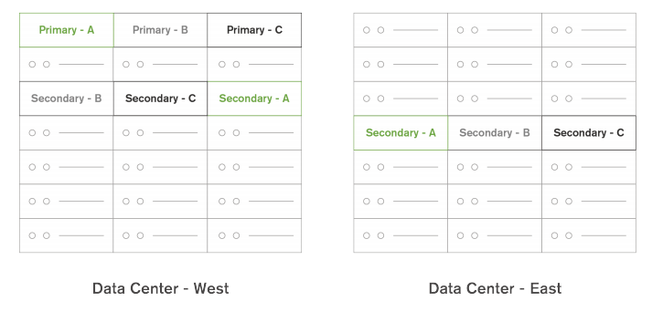
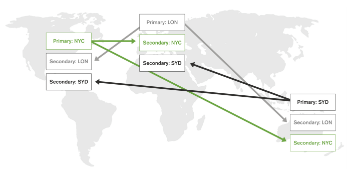

Best Practices per Availability e Consistenza¶
Il seguente documento cerca di illustrare alcuni dei principali accorgimenti che è necessario tenere in considerazione quando si implementa una architettura distribuita di mongodb al fine di evitare problematiche riguardanti:
- Availability in caso di uno o più nodi mancanti
- Availability a fronte di indisponibilità di una server farm
- Distribuzione geografica dei nodi su più server farm
- Availability a fronte di failure, inclusa disponibilità dei dati in lettura e scrittura
- Continuità di servizio e Throughput di scrittura
Il teorema di Brewer (CAP) afferma che non è possibile fornire contemporaneamente: Consistency, Availability e tolleranza al Partizionamento di rete.
Questo significa che qualora si volesse ottenere Availability dei nodi e tolleranza al partizionamento di rete si dovrà rinunciare alla consistenza delle letture. In caso in cui si volesse avere consistenza delle lettura si dovrà invece localizzare le stesse e si andrà quindi a perdere in availability qualora fallissero i nodi su cui si è localizzato le letture stesse.
Siccome nei sistemi distribuiti il network partitioning non è evitabile, il seguente documento prenderà in considerazione due casi:
- Deploy su un singolo data center (quindi in assenza di network partitioning)
- Deploy su più data center
La soluzione più comune ( qualora non si attuasse la distribuzione geografica dei nodi ) è di avere più data center, ma con uno dei due considerato principale. Questo permette il recovery dei dati dal secondario in caso di fallimento dell’intero data center, senza introdurre problemi legati al partizionamento di rete.
Availability a fronte di failure, inclusa disponibilità dei dati in lettura e scrittura¶
L’availability di MongoDB è ottenuta tramite l’uso dei Replica Sets, all’interno di un replica set è presente un nodo primario, che è quello incaricato delle scritture ed uno o più nodi secondari.
La disponibilità dei dati in lettura è data dalla presenza di più nodi all’interno del replica set. Tutti i nodi sono in grado di fornire risposte alle letture qualora l’applicazione sia configurata con preferenza di lettura: primaryPreferred, secondary, secondaryPreferred, nearest.
In caso quindi di fallimento di uno qualunque di questi nodi, se l’applicazione indica una delle sopra indicate configurazioni di lettura potrà leggere da un altro nodo disponibile.
Nel caso in cui invece le preferenze di lettura siano configurate come primary, i dati non saranno disponibili in lettura fino al termine del processo di elezione del nuovo primary.
La disponibilità dei dati in scrittura, è vincolata alla disponibilità di un nodo primary. Qualora il nodo primario venisse a mancare il sistema elegge automaticamente tramite votazione dei membri il nuovo nodo primario.
- Il processo può richiedere in tutto tra i 20 ed i 60 secondi divisi in:
- 10-30 Secondi per accorgersi che il primario è venuto a mancare
- 10-30 Secondi per decidere quale nodo deve prendere il suo posto.
Durante questo lasso di tempo le richieste di scrittura non potranno essere soddisfatte e le applicazioni dovranno gestire gli errori di scrittura riprovando dopo un certo delay.
Availability in caso di uno o più nodi mancanti¶
Qualora un nodo secondario venisse a mancare, come anticipato precedentemente, il comportamento dipenderà dalle preferenze di lettura.
Qualora il nodo primario venisse a mancare il sistema eleggerà automaticamente un nuovo primary tramite votazione dei membri.
- L’algoritmo di elezione del nuovo primario si basa su tre parametri:
- La latenza dell’oplog (quale dei nodi è più avanti nell’oplog)
- Qualità della connessione tra i nodi
- Priorità assegnata al nodo ( i nodi a priority 0 non possono mai diventare primari )
Ogni nodo di default può emettere 1 voto, il nodo che ottiene più voti diventerà il nuovo primary.
E` facile capire come questo processo sia efficace, ma vincolato alla capacità di trovarsi in maggioranza da parte dei nodi.
Nel caso in cui metà dei nodi che nel replica set (ES: 2 su 4) non sia disponibile i rimanenti non riescono a formare una maggioranza (sono solo metà) e quindi si pongono in sola lettura in quanto incapaci di eleggere un primario.
Questa problematica può essere evitata garantendo che sia sempre possibile votare a maggioranza per il numero di fallimenti che si vuole supportare. Ad esempio, invece di installare 4 nodi se ne potrebbero installare 5, così anche qualora ne cadessero 2 ne restano più della metà in piedi.
In generale vale la regola che una chiara maggioranza di nodi devono essere in grado di contattarsi, quindi il numero di nodi dovrebbe essere sempre dispari e può supportare il down di (N - 1) / 2 nodi, dove N è il numero totale di nodi.
Availability in caso di indisponibilità di una server farm¶
In questo caso valgono in generale le regole applicate al replica set.
In caso di indisponibilità di un data center o armadi deve essere sempre possibile garantire una maggioranza (quindi più di metà dei nodi devono potersi parlare), altrimenti il replica set non sarà in grado eleggere il nuovo primary in modo corretto.
Prendendo l’esempio che Il replica set sia distribuito equamente (ES: 4 nodi divisi in 2 su 2 data center) e si può considerare cosa capiterebbe se sganciasse dalla rete il secondo data center. In questo caso, anche se tutti i nodi sono vivi, non sono in grado di votare a maggioranza perché riescono a contattarsi solo tra minoranze. In questo caso si porranno quindi tutti e 4 i nodi in sola lettura in quanto incapaci di determinare una maggioranza anche se sono tutti vivi.
Per ovviare la problema sarebbe necessario sia disponibile un terzo data center con 1 nodo, così anche in caso di caduta/irraggiungibilità di 1 data center gli altri due potrebbero contattarsi e formare una maggioranza.
Alternativamente si può decidere che uno dei due data center è quello principale e collocare un nodo in più su di lui, in questo caso, qualora cadesse il secondo data center, il primo resterebbe comunque in maggioranza. Notare che in caso di caduta del primo il cluster si porrebbe comunque in sola lettura, ma è comunque una soluzione preferibile al precedente caso in cui qualsiasi dei due data center diventasse indisponibile causerebbe l’assenza del servizio di scrittura.
In generale vale la regola che una chiara maggioranza di nodi devono essere in grado di contattarsi, quindi il numero di data center deve essere sempre dispari e può supportare il down di (N - 1) / 2 data center, dove N è il numero totale data center.
Il discorso non si applica solo al down effettivo, ma anche in caso di split di rete.
Replication Read Consistency¶
In un Replica Set, tutti i client scrivono sul primary e nella configurazione di default leggono anche esclusivamente dal primary. I nodi secondary sono usati solo per garantire l’affidabilità in caso di fallimento del primary e non garantiscono alcun aumento prestazionale.
Questa configurazione garantisce la consistenza delle letture in quanto si va a leggere direttamente dallo stesso nodo che detiene i dati più aggiornati.
Qualora si decidesse di introdurre la lettura anche dai secondary (opzione che può essere configurata nell’applicazione che usa mongodb tramite il driver mongodb) è importante tenere a mente che essa garantisce solo una forma di eventual consistency. Quindi ogni nodo avrà lo stesso stato dei dati solo qualora non fossero fatte scritture.
Se si vuole raggiungere una forma di monotonic read consistency è necessario che la configurazione garantisca la lettura di ogni nodo dell’applicazione da un singolo nodo mongodb: Se l’istanza dell’applicazione legge dal nodo X deve leggere sempre dal nodo X.
Se si permettesse la lettura da un qualsiasi nodo si perderebbe la garanzia di monotonic read consistency. Ogni nodo potrebbe quindi leggere avanti e indietro nel tempo tra due letture diverse in modo randomico in quanto ogni secondary può essere ad un momento diverso del tempo.
Facendo un esempio, se si procede alle seguenti operazioni:
- Crea gruppo A
- Crea utente X in gruppo A
Nel caso in cui l’applicazione legga sempre dallo stesso nodo, nel momento in cui l’utente tenta di effettuare il login, a seconda dello stato di replicazione (ha applicato il punto 1, ha applicato il punto 2, non ha ancora applicatio nessuno dei due) si potrà ricadere solo nei casi:
- Utente non esistente
- Login con successo
Nel caso in cui invece l’applicazione legga da tutti i nodi può invece capitare che per recuperare l’utente legga prima da un nodo che ha applicato sia il punto 1 che il punto 2 e poi da un nodo che non ha applicato nessuno dei due quando deve recuperare il gruppo dell’utente. In questo caso probabilmente l’applicazione andrebbe in crash in quanto riuscirebbe a verificare utente e password, ma poi non a recuperarne il gruppo.
Qualora si volesse scalare le letture sui secondary (e ci fosse più di un secondary) è bene assegnare ogni processo dell’applicazione ad un secondary e fargli fare fallback sul primary solo qualora il secondary non fosse disponibile. Questo garantirebbe che le letture siano monotone, anche se tra indietro nel tempo.
Per fare ciò si può assegnare ad ognuno dei nodi un tag diverso (tranne il primary che li dovrà avere tutti) e configurare il driver in secondaryPreferred limitandolo poi al tag del nodo da cui deve leggere. In questo modo si garantirebbe che il client legga sempre dallo stesso secondary e possa fare fallback sul primary qualora il secondary venisse a mancare. In caso di caduta del nodo primario tuttavia è necessario rimuovere dello stesso i tags e riassegnarli manualmente al nuovo primario una volta eletto.
Note
A causa della complessità necessaria a garantire consistenza dei dati è preferibile scalare tramite l’uso dello sharding piuttosto che ricorrere alla lettura dai secondary. Nel caso dello sharding si potrà effettuare letture e scritture solo sui primary, garantendo così la consistenza ed aumentare le performance in quanto ogni shard dovrà elaborare una minor quantità di dati.
Continuità di servizio e Throughput di scrittura¶
La continuità di servizio può essere fornita tramite l’uso di Write Concern e di un data center separato che detiene dei nodi che non hanno potere di voto (votes 0) ed hanno priority 0.
Questo, come visto nella sezione Availability in caso di indisponibilità di una server farm, permette di garantire che in caso di fallimento di un singolo nodo ci sia sempre la capacità di eleggere un nuovo primary che è sempre dislocato tra quelli del datacenter primario, facendo così comportare il cluster come se non esistesse il secondo datacenter.
Il secondo datacenter sarà quindi usato solo a scopo di recovery dei dati e ripristino del servizio, tuttavia per poter fare ciò è necessario che questo detenga i dati aggiornati.
Questo deve essere ottenuto tramite l’uso del parametro Write Concern e richiede quindi interventi lato applicativo.
Il numero di nodi nel secondo data center deve essere pari almeno alla metà dei nodi del primo data center + 1. Supponendo quindi che il primo data center abbia 3 nodi, il secondo dovrebbe averne 2. Impostando poi il write concern pari al numero di nodi nel primo data center + 1 si garantirà che almeno uno dei nodi del secondo data center abbia il dato aggiornato all’ultimo istante sempre.
Questo permette di recuperare poi dal secondo data center i dati in caso di una procedura di disaster recovery.
Quando si imposta il valore write concern e si decide il numero di nodi da dislocare sul secondo data center è importante tenere in considerazione i seguenti fattori:

- Il WriteConcern deve essere sempre inferiore al numero totale di nodi, altrimenti in caso di fallimento di 1 o più nodi le scritture non potrebbero più eseguirsi.
- Il WriteConcern deve essere sempre superiore al numero di nodi nel primo data center altrimenti non ci sarebbe la garanzia che il dato sia stato scritto anche sul secondo data center
- Il numero di nodi sul secondo data center deve essere sempre inferiore al numero di nodi sul primo, così che in caso di fallimento del secondo data center o di split di rete sia comunque sempre possibile eleggere una maggioranza all’interno del primo data center mantenendolo così operativo.
Note
Non è possibile ovviare ai primi due punti usando il Write Concern majority in quanto la maggioranza è sempre soddisfatta dal data center primario da solo, quindi non garantirebbe la replicazione dei dati sul secondo data center.
Il fatto di richiedere l’incremento del WriteConcern ha ovviamente un impatto diretto sulle performance di scrittura, in quanto per ogni scrittura è necessario attendere che il dato sia stato replicato anche su quel numero di nodi. Specialmente nel caso della replicazione su un secondo data center questo rallentamento può essere molto alto a causa della latenza di rete.
Qualora le read preference non fosse primary solitamente si vuole ricorrere anche all’uso del tagging per tagliare fuori i nodi del secondo data center dalle letture ed evitare un rallentamento causato dalle richieste ad una zona geografica diversa.
Il tagging può essere usato anche per dichiarare un write concern custom che richieda che il dato sia scritto in almeno 1 nodo di ciasciuno dei due data center, riducendo così la lentezza di scrittura nel caso migliore (ma non nel caso peggiore in cui il dato si replichi sul secondo data center solo dopo tuti i nodi del primo).
Distribuzione geografica dei nodi su più server farm¶
La distribuzione geografica dei nodi su data center diversi con localizzazione delle lettura in base alla prossimità dei nodi è fornita da mongodb tramite l’uso della read preference nearest.
Qualora si trattasse di un sistema in sharding, ogni server farm deve disporre di un suo mongos ed i client devono collegarsi al mongos della loro zona geografica, in quanto la preferenza di lettura dal nodo più vicino in questo caso vuole dire il più vicino al mongos, non il più vicino al client.
Tuttavia l’uso di questa preferenza introduce alcune problematiche che vanno a ledere la robustezza dell’architettura:

La lettura nearest sceglierà il nodo più vicino. Questo può portare alla perdita di consistenza in quanto non è detto che lo stesso nodo sia scelto due volte di seguito. Questa problematica può essere mitigata, ma non annullata con i seguenti accorgimenti:
- Uso di 1 solo nodo locale per ogni replica set, questo fa sì che il client predilsica sempre lo stesso nodo e vada sugli altri solo in caso di fallimento dello stesso garantendo così la consistenza in caso di sistema interamente funzionante
- Localizzazione delle letture a livello di client. Il client stesso deve fare riuso delle stesso connessioni (connection pooling) e sostituirle solo in caso di fallimento del nodo. In questo modo si avrà consistenza nelle letture fino al fallimento del nodo “scelto”.
Le scritture avvengono comunque sul nodo primary, per il vincolo antecedente il nodo primary non potrà risiedere sempre sullo stesso data center dell’applicazione. Di conseguenza le scritture subiranno un degrado di performance per scrivere sul nodo in un altra server farm
Le scritture devono avvenire con Write Concern alto per garantire disaster recovery, di conseguenza comunque le scritture saranno molto più lente rispetto ad un deploy iteramente localizzato in quando dovranno distribuirsi tra nodi su più server farm diverse.
In generale per la distribuzione geografica dei nodi valgono tutte le regole applicate nel caso di più data center abbinate alle problematiche di read consistency in quanto per forza di cose si leggerà da uno o più nodi slave dovendo applicare la lettura nearest.